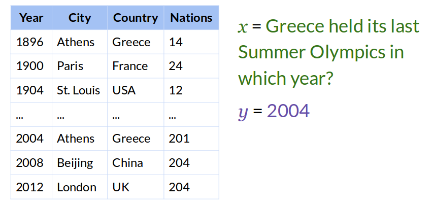

Compositional Semantic Parsing on Semi-Structured Tables

Please see the usage notes below!
Note: The dataset viewer contains training data from dataset version 1.0.2
Task
Answer complex questions on semi-structured tables using question-answer pairs as supervision.
Why this task?
We want to solve the two main challenges of question answering:
- Question complexity (depth).
We want a system that can answer not only simple questions
(e.g., "Where is Chichen Itza?")
but also more complex questions
(e.g., "What is the cheapest bus to Chichen Itza leaving tomorrow?").
- Domain size (breadth).
We want a system that can generalize to a variety of domains, not just a few specific domains.
Instead of approaching one challenge at a time, we want to handle both simultaneously:
- The WikiTableQuestions dataset contains complex questions
that require multi-step reasoning and various data operations
such as comparison, aggregation, and arithmetic computation.
- Instead of a fixed database,
each question should be answered based on a semi-structured table.
Different questions may be asked on different tables with different schemas,
and tables in the test data are distinct from the ones in the training data.
Usage Notes
Please use the latest version (1.0.2) and the official evaluator for future development.
The dataset splits used in the original paper are:
- Dev: Mean accuracy over three (not five) splits of the training data.
In other words, train on random-split-{1,2,3}-train.tsv and test on random-split-{1,2,3}-dev.tsv,
respectively, then average the accuracy.
- Test: Train on training.tsv and test on pristine-unseen-tables.tsv.
The file
pristine-seen-tables.tsv was not used in the original paper.
Paper, Code, and Reproducible Experiments
Panupong Pasupat, Percy Liang.
Compositional Semantic Parsing on Semi-Structured Tables.
Association for Computational Linguistics (ACL), 2015.
The paper proposes a semantic parsing system
that learns to answer questions using question-answer pairs as supervision.
Code, data, and experiments are available on the
CodaLab platform.
The code is implemented in SEMPRE framework.
Other Material and Related Work